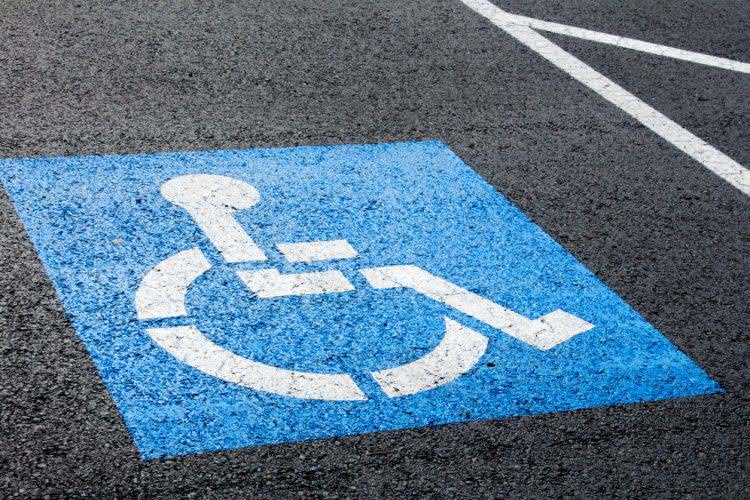

BIENVENUE !
Nous savons tous ce que ce pictogramme signifie...
Deuxième zone de contenu
Il est possible de naviguer avec Tab. Les contrôles ci-dessous se naviguent avec les flèches gauche et droite.
Troisième zone de contenu
Cet exemple comprend des titres h2 (qui seront repris pour les boutons ci-dessous), c’est donc un parfait exemple.
Troisième zone de contenu
Cet exemple comprend des titres h2 (qui seront repris pour les boutons ci-dessous), c’est donc un parfait exemple.
À propos
Ce site est un support et a pour objectif de sensibiliser le plus grand nombre à la problématique de l'accessibilité numérique en général mais plus précisément pour les personnes handicapées.
Il a aussi pour vocation de fournir des préconisations aux concepteurs de contenu numérique.
Vous y trouverez donc deux sections traitant chacune de ces deux domaines avec notamment des supports visuels, des textes mais aussi des liens utiles.
Quelques chiffres
En 1994, Tim Berners-Lee, le co-créateur du web, a fondé le World Wide Web consortium(W3C).
Le W3C supervise le développement d'un ensemble de standards pour que le web soit accessible à tous !
Charte graphique
En terme d'accessibilité, les choix les plus difficiles à faire ont étés ceux de la charte graphique.
Nous nous sommes demandé quelles étaient les couleurs compatibles avec les 3 formes de daltonisme et nous en avons fait de même en ce qui concerne les polices de caractère pour d'autres formes de handicaps comme la dyslexie et les déficiences visuels.
Nous avons dû faire un choix fort entre design ou accessibilité pour le plus grand nombre, la thématique de ce site étant l'accessibilité, nous avons donc opté pour cette dernière au détriment du design.
L'Équipe
Dans le cadre d’un parcours de formation nous sommes 3 stagiaires qui avons pour objectif de concevoir et développer un outil de communication numérique de type site web sur le thème de l'« e-inclusion » des personnes en situation de handicap.
Nous avons donc eu la lourde tache de réalisé ce projet de A à Z avec toutes les difficultés que cela implique(respect du cahier des charges, réalisation d’un dossier de conception,de maquettes, respect des délais mais surtout respecter au mieux l’accessibilité pour tous).
Cyril
Développeur web et technicien du code unique en son genre ! La plupart des solutions aux problèmes rencontrés lui sont venues en mangeant !
Alors attention ne le faites jamais travailler le ventre vide !
Souad
Designeuse web et développeuse web son sens de l'organisation est plus qu'aiguisé au point de pouvoir vous faire refaire tout votre cahier des charges !
Amanda
Designeuse et développeuse dans l'âme, l'éditeur de code est son meilleur ami. Enjouée, dynamique, on ne s'ennuie jamais avec elle. Son surnom est miss blablabla.
Boris
Commanditaire du projet accessibilité, professionnel, pointilleux, mais super cool!
Avec lui, la moindre petite erreur a été détectée en l'espace d'un quart de seconde.
Sensibilisation
Qu’est ce que l’ accessibilité ?
L’accessibilité numérique permet aux personnes en situation de handicap d’accéder aux contenus et services digitaux. Pour ce faire, on applique aux interfaces digitales des normes d’accessibilité émises par le W3C (World Wide Web Consortium) et pensées par des ergonomes pour chaque type de handicap. L’accessibilité couvre également des notions liées à la compatibilité matérielle et logicielle ainsi qu’à la performance des réseaux. Tous les utilisateurs, sans discrimination, pourront alors Percevoir - Comprendre - Naviguer, mais aussi Interagir - Créer du contenu - Apporter leur contribution à l’univers numérique. Outre son utilité première, à savoir la mise à disposition des contenus aux publics sans discrimination, l’accessibilité numérique présente de nombreux avantages – et pas des moindres – qui constituent autant d’opportunités pour les entreprises, bien au-delà d’une obligation légale.

Les différentes formes d'handicaps
Plusieurs handicap peut rendre un site inaccessible :
- Difficulté de lire les textes
- Difficulté de différencier les couleurs
- Aveuglement totale
- Agrandisseur de texte proposé par le navigateur
- Logiciel d'agrandissement
- Lecteur d'ecran pilotant une synthèse vocale ou un afficheur braille
- Impossibilité de lire les contenus audio
- Transcription textuelle des contenu audiovisuels
- Traduction des contenu en langue des signes
- Incapacité d'utiliser clavier ou souris non adapté
- Souris adapté
- Accès clavier
- Logiciels de reconnaissance vocale
- Comutateur d'accès
- Nécessité de bénéficier de contenu adapté et facilement accessible
- Nécessité d’un accompagnement pour être autonome dans l’utilisation.
- Navigation assisté par icônes
- Logiciels de reconnaissance vocale
- Difficulté de lire les textes
- Difficulté de différencier les couleurs
- Aveuglement totale
- Agrandisseur de texte proposé par le navigateur
- Logiciel d'agrandissement
- Lecteur d'ecran pilotant une synthèse vocale ou un afficheur braille
- Impossibilité de lire les contenus audio
- Transcription textuelle des contenu audiovisuels
- Traduction des contenu en langue des signes
- Incapacité d'utiliser clavier ou souris non adapté
- Souris adapté
- Accès clavier
- Logiciels de reconnaissance vocale
- Comutateur d'accès
- Nécessité de bénéficier de contenu adapté et facilement accessible
- Nécessité d’un accompagnement pour être autonome dans l’utilisation.
- Navigation assisté par icônes
- Logiciels de reconnaissance vocale
Les problématiques rencontrées
Pour agir contre l’exclusion sociale des personnes en situation de handicap, c’est souvent à l’accessibilité des infrastructures que l’on pense (bâtiments ou transports en commun par exemple). Cependant, l’accessibilité ne s’applique pas uniquement à ces domaines. Elle s’étend aussi à l’usage que nous avons tous des sites web, applications et autres outils digitaux.

En Europe environ 20% de la population sont porteuse d'un handicap , or ne rien mettre en œuvre pour faciliter l'accès à son site c'est comme ignorer un cinquième de ses internautes. Aujourd'hui , de nombreux site utilise le javascript pour rendre une page dynamique, mais souvent la sémantique des pages en vient a être négligée, pourtant une bonne sémantique permet de facilité la lecture des synthèses vocale. De plus c'est fonctions sont généralement prévus pour fonctionner à la souris en oubliant le clavier ou des commande vocales .
Préconisations
A destination des concepteurs et développeurs de sites et d'applications web, leurs rôles étant déterminant.

Rendre le web accessible
En général, tout le monde s’accorde pour dire que l’accessibilité est une cause juste et personne ne réfute le fait que tous les sites devraient être accessibles. Toutefois, dans les faits, l’accessibilité est bien trop souvent traitée comme une surcouche et n’est vraiment prise en considération qu’une fois la phase de production terminée, lors d’un audit effectué par un expert en accessibilité certifié.
En réalité, la mise en accessibilité ne peut se résumer à un audit en fin de projet car il s’agit d’une vraie démarche à initier le plus tôt possible.
Pour les personnes en situation de handicap, les services numériques représentent une opportunité unique d’inclusion dans la société à condition que ces services soient conçus et développés selon des règles d’accessibilité. En effet, comme le numérique est présent partout aujourd’hui, un manque d’accessibilité conduit irrémédiablement à des situations d’exclusion, impossibilité d’occuper un emploi, d’accéder aux droits, de profiter des services numériques, d’accéder à l’information…»
Tout d'abord comprendre les difficultés rencontrées par les porteurs d'handicaps est primordial. Dans un deuxième temps s'approprier les normes et les bonnes pratiques grâce notamment aux ressources en ligne.
Que dit la loi ?
En France, la loi du 11 février 2005, “Pour l’égalité des droits et des chances, la participation et la citoyenneté des personnes handicapées” impose, dans son article 47, “l’accessibilité des services de communication publique en ligne pour les services de l’Etat, des collectivités territoriales et des établissements publics qui en dépendent”, dans un premier temps. Dans d’autres pays cette obligation existe depuis les années 90, c’est le cas des Etats-Unis.
En outre, le World Wide Web Consortium (W3C), organisme de normalisation, préconise le « web pour tous », c’est-à-dire que tout le monde doit pouvoir accéder aux innovations technologiques même sans tenir compte de leur matériel, leurs logiciels, leur infrastructure réseau, leur langue maternelle, leur culture, leur situation géographique et leurs capacités physiques ou mentales.
Normes et bonnes pratiques pour des sites web accessibles
4 points à prendre en considération pour rendre votre site web accessible aux personnes handicapés.
- Rédaction d'un site web accessible
- Conception d'un site web accessible
- Développement d'un site web accessible
- Rendre les médias et audio accessible
Formation
« Presque un développeur sur 2 n’a jamais entendu parler de l’accessibilité numérique »
Un conseil pour nos formateurs :Comme la sécurité ou le respect des données personnelles, l’accessibilité numérique doit être enseignée à l’ensemble des professionnels du numérique en formation initiale ou continue. Un module de sensibilisation intégré au socle commun pour l’ensemble des apprenants serait déjà une énorme avancée. Quand l’accessibilité est prise en compte en amont et quand les intervenants sont formés, cela ne coûte pas plus cher de produire un service numérique accessible et utilisable par tous ! »
Formation AlsacréationFormation Humancoders

Que peut-on faire pour améliorer l’accessibilité numérique ?
Chef de projet
Le Chef de projet (ou Product Owner) a pour mission de prendre en compte les contraintes d’accessibilité lors de la rédaction des spécifications fonctionnelles et des choix techniques qui en découlent.
Développeurs
Un code valide constitue la pierre angulaire de l’accessibilité. Le développeur est l’acteur le plus important dans le cadre d’une démarche de mise en accessibilité car c’est lui qui aura la lourde mission de tout mettre en application. Un code trop complexe est bien souvent source d’incompatibilité avec les technologies d’assistance. “L’objectif c’est de faire un site le plus simple possible.
UX Designer
L’UX Designer, garant de l’expérience utilisateur (User expérience), a pour mission de concevoir l’interface pour le plus grand nombre. Il doit donc penser à tous les utilisateurs, quel que soit leur profil, et identifier leurs usages et leurs besoins. En créant un (ou plusieurs) persona en situation de handicap, ce dernier s’assure de ne pas oublier les utilisateurs ayant des besoins particuliers d’accessibilité. Dans le cadre d’une refonte, il pourra également aller à la rencontre d’utilisateurs en situation de handicap pour identifier les points de friction récurrents sur l’interface existante afin de l’optimiser. Il doit également se tenir au fait des bonnes pratiques d’accessibilité en conception et concevoir l’interface en fonction de ces dernières.

DA / UI Designer
Le Directeur Artistique ou le Designer d’interface aura à sa charge de s’assurer que la couche graphique de l’interface permettra au plus grand nombre de percevoir tous les éléments et d’accéder à l’information. Le choix des couleurs devra notamment se faire en respectant les contraintes de ratio de contrastes imposés par le RGAA.

Testeurs
Si les tests sont réalisés en interne par des membres de l’équipe, les personnes en charge des tests en cours de production devront également tester le bon fonctionnement de tous les composants en utilisant diverses technologies d’assistance et en simulant divers mode de navigation. S’il est prévu de faire tester l’interface par de vrais utilisateurs, les personnes en charge du recrutement des participants (Chef de projet) devront s’assurer que tous les types de handicaps sont représentés par les testeurs recrutés.
Chez nos voisins britanniques “Au Parlement britannique, lors de l’organisation de tests, le recrutement des participants n’est pas forcément axé sur l’accessibilité car les équipes savent qu’il y aura un audit dédié à l’accessibilité en fin de projet. Mais au Gouvernement (Government Digital Service), à chaque phase de test il faut qu’il y ait des personnes représentatives des besoins en accessibilité (à minima 25-30% des testeurs). A chaque sprint, des tests sont organisés regroupant au moins 8 participants dont au moins 2 ou 3 en situation de handicap. Ces tests sont obligatoires.”

Auditeur
Un audit de fin de projet devra être prévu afin de vérifier la conformité de l’interface au RGAA. Évaluer toutes les pages d’un site web est bien souvent trop chronophage, c’est pourquoi l’auditeur sélectionnera les pages les plus emblématiques du site et celles apportant le plus de valeur à l’utilisateur. Il devra ensuite vérifier rigoureusement et pour chacune des pages sélectionnées, tous les critères du RGAA les uns à la suite des autres en effectuant l’intégralité des tests proposés dans le référentiel.

Contributeur
Comme énoncé précédemment, une démarche de mise en accessibilité ne doit pas s’arrêter à l’audit qui suit la mise en production du site, mais doit se poursuivre lors de la phase d’exploitation car l’accessibilité numérique n’est pas un état définitif et n’est jamais acquise, elle est par nature évolutive. En effet, une publication web n’est pas figée et évolue dans le temps en fonction des mises à jours éditoriales et techniques. Le contributeur doit donc veiller à renseigner correctement les alternatives textuelles des contenus non textuels tels que les images, les vidéos, les graphiques… Il doit par exemple également s’assurer que les textes sont compréhensibles dans un français simple, que les tableaux sont construits correctement et que les fichiers disponibles au téléchargement sont accessibles (PDF, Word, Powerpoint…).
Utilisateur
Enfin, l’utilisateur final de l’interface a pour responsabilité de régulièrement mettre à jour son navigateur et ses technologies d’assistance pour bénéficier des avancées techniques en matière d’accessibilité. Il doit également signaler tout défaut d’accessibilité qu’il rencontre aux responsables du site ou de l’application concernée.
Ce faisant, il contribue à accélérer la prise de conscience des équipes de production en les alertant et motive les démarches de mise en accessibilité. Cette liste n’a pas la prétention d’être exhaustive, de nombreux autres interlocuteurs peuvent intervenir lors d’un projet et avoir une incidence sur son accessibilité.
Ainsi, les DSI par exemple, lorsqu’elles sont sollicitées, ne devraient pas imposer de logiciels ou solutions informatiques connues pour présenter des défauts d’accessibilité.